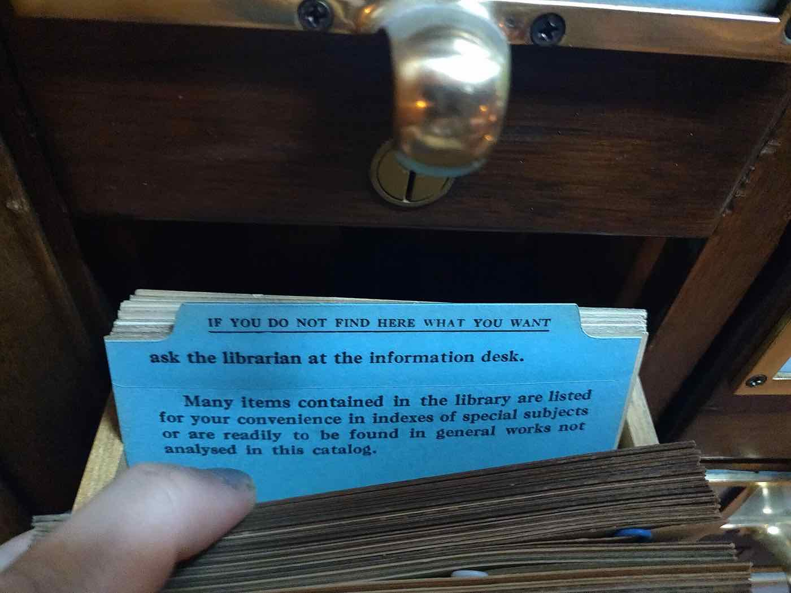
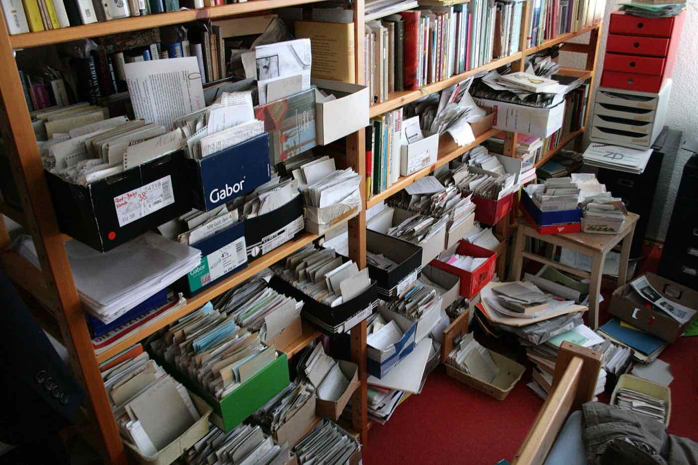
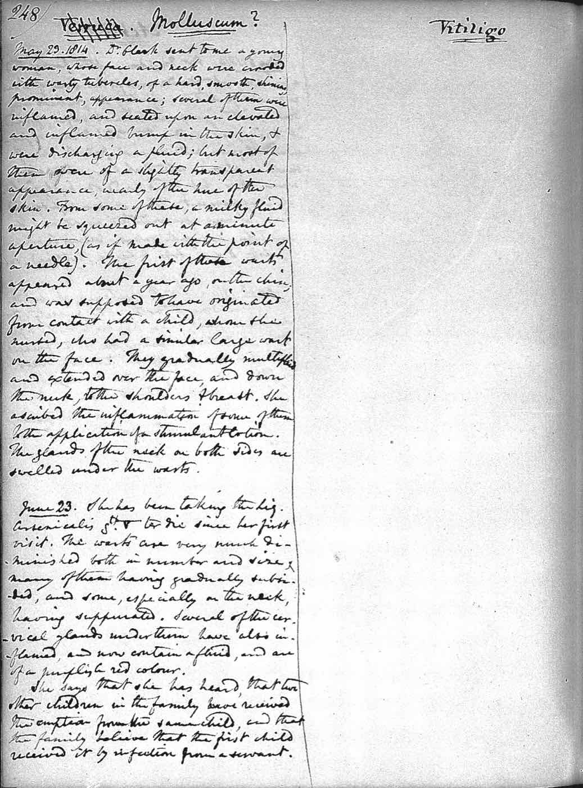

Notas que respondem.
Brain Notes guarda notas, reuniões e ações em Markdown numa pasta do seu computador, versionada no Git. A Brain AI responde citando as notas, e os agentes trabalham em qualquer pasta sua.
Conversas
- Nova conversaAgora
- Ações da semanaOntem
- Roteiro do vídeoSeg
Brain AI
Próximas reuniões
- 14:00Revisão do roteiro do vídeoCarla, BrunoGravar
- 16:301:1 com o BrunoBrunoPreparar nota
Reuniões recentes
- Ontem 10:00Planejamento do lançamento
- Seg 15:301:1 com a Carla
2 chamadas de ferramenta
Notas
- Projetos
- Lançamento da versão 2
- Livro sobre hábitos
- Áreas
- Recursos
- Arquivo
- Reuniões
Projetos / Lançamento da versão 2.md
Lançamento da versão 2
type: projectstatus: in_progressprazo: 2026-11-04
Fase 1
Fechar o escopo com o time
Revisar a página de preços
attachments/quadro-do-lancamento.png
Ver também [[Planejamento do lançamento]].
Planejamento do lançamento
Resumo
O time decidiu lançar a versão 2 em duas fases. A Brain AI entra primeiro; os Agentes saem na semana seguinte, depois dos testes com a lista de espera.
Decisões
- Lançamento em duas fases, Brain AI primeiro.
- Preço mantido para quem já comprou.
Próximos passos
- Revisar o texto da página de preços sex@bruno
- Gravar o vídeo de demonstração seg@carla
Ações
- Revisar o texto da página de preços@bruno · sex, 30 out · Lançamento da versão 2alta
- Gravar o vídeo de demonstração@carla · seg, 2 nov · Lançamento da versão 2
- Enviar o anúncio para a lista de espera@ana · sáb, 31 out
- Fechar o escopo com o time@ana · feita ontem
Agentes
- siteAguardando você
- livroTrabalhando
- appConcluído
Atualize a página de preços com o novo plano
Atualizei o texto e a tabela de planos. Preciso rodar o build para conferir.
Rodar comando
npm run build
Pergunte às suas notas.

Escolha onde procurar.
O repositório inteiro, uma pasta ou uma nota. Anexe um print, uma planilha ou um PDF, ou dite a pergunta: a voz vira texto no seu computador.
Cada resposta mostra a fonte.
As notas usadas viram links. Um clique abre a nota na linha citada, para você conferir o que foi dito.
Você decide quanto ela pode.
Cinco modos, de Perguntar a Acesso total. No padrão, ela lê à vontade e pede licença antes de mudar qualquer nota.
O lançamento foi dividido em duas fases: a Brain AI sai primeiro e os Agentes na semana seguinte (Planejamento do lançamento).
Reuniões/Planejamento do lançamento.md
12## Resumo
13O time decidiu lançar a versão 2 em duas fases.
14A Brain AI entra primeiro; os Agentes saem na…
Modo de permissão
- PerguntarLê o repositório sem perguntar; pergunta antes do resto.
- Aceitar ediçõesTambém cria e edita no repositório sem perguntar.
- PlanejarSó investiga e propõe um plano, sem alterar nada.
- AutoO provedor decide sozinho e pergunta nas ações arriscadas.
- Acesso totalFaz tudo sem perguntar, exceto em locais sensíveis.
Grave a reunião.
As falas aparecem enquanto a reunião acontece, transcritas no seu computador. Ao parar, só faltam os falantes e o resumo, e o áudio é apagado.
Sem gravação? Cole a transcrição ou importe um .vtt, um .srt ou um áudio.
- Chamada00:04
Bom dia! Conseguiu ver o roteiro do vídeo?
- Eu00:09
Vi sim. Acho que a abertura pode ser mais curta.
- Chamada00:15
Concordo. Corto os primeiros vinte segundos.
Da reunião à ação feita.
Próximos passos
Gravar o vídeo de demonstração
- [ ] Gravar o vídeo #action
Primeiro ela nasce no resumo.
- Gravar o vídeo de demonstração@carla · seg, 2 nov
- Revisar a página de preços@bruno · sex, 30 out
Depois ganha dono e prazo.
LembreteGravar o vídeo de demonstraçãoHoje, 09:00 · Adiar 1 hora
Na hora certa, o lembrete avisa.
Lançamento da versão 2
2 de 4 ações feitas
Gravar o vídeo de demonstração
E fica feita, na própria nota.
Agentes em paralelo.
Vários agentes de IA, cada um numa pasta sua: um app, um site ou um livro. Conversa, alterações e terminal lado a lado. Mude os controles e veja o agente responder.
Agentes
Adicione o filtro por label na lista de ações
Encontrei o componente da lista. Vou adicionar o filtro e rodar os testes.
Rodar comando
pnpm test actions
Em segundo planoLimpar concluídos
- pnpm devRodando
- Sub-agente: revisorConcluído
actions-list.tsx +12 −3
Os agentes usam o Claude Code ou o Codex com a sua própria assinatura, no seu computador. Como funcionam
Tudo continua sendo Markdown.
Lançamento da versão 2
type: projectstatus: in_progress
Fechar o escopo com o time
attachments/quadro.png
Editor em blocos.
Cada nota é um arquivo .md, e o editor preserva o que você não tocou. Cole uma imagem e ela vai para a pasta de anexos.
config.yaml
---
idioma: pt-BR
reunioes:
pasta: Reuniões
template: padrãoQualquer arquivo de texto.
JSON, YAML, .gitignore e blocos de código com linguagem abrem no mesmo editor. O que está ali é tudo o que existe.
- Preço da licença em revisão.
+ Preço mantido para quem já comprou.Sua pasta, o seu git.
Escolha uma pasta ou um clone que já existe. O app usa o git e as credenciais do seu computador, e nunca descarta trabalho local.

Organize pelo método PARA.
A skill /organizar propõe Projetos, Áreas, Recursos e Arquivo, com nomes de gente, e só move depois do seu ok.
Template do resumo
Qwen3 4BInstalado · 2,4 GB
Resumos no seu formato.
Templates são arquivos Markdown do repositório. O resumo roda num modelo local, que você baixa ou remove em Ajustes.
Revisão do roteiro começa em 1 minCarla, Bruno
A agenda avisa.
Conecte o Google Calendar, só leitura. Um minuto antes, o app oferece gravar, e título e participantes entram na nota.
Por que o Brain Notes existe.
Eu queria um lugar só para notas, reuniões e o que sai delas. Cada ferramenta guardava um pedaço, num formato que não era meu.
O Brain Notes parte de uma regra simples: tudo vira um arquivo de texto no seu repositório. Se o app sumir amanhã, suas notas continuam lá, legíveis.
A IA entra do mesmo jeito. Ela lê quando você pede, mostra de onde tirou a resposta e só muda o que o modo que você escolheu deixa.
Se quiser conversar sobre o app, meu e-mail está no fim da página. Eu leio todos.
Bruno Dias Donnici
Criador do Brain Notes

Antes de comprar.
Por licença. Escreva para o e-mail abaixo e você recebe o valor, a forma de pagamento e o instalador. Você tem 7 dias para desistir.
No macOS com Apple Silicon hoje. Windows, Linux e um app web instalável estão a caminho.
Numa pasta do seu computador que você escolhe, ligada ao seu repositório no GitHub. Pode ser um clone que você já tem. Não temos acesso a elas.
Só quando você pergunta ou pede uma ação. No modo padrão ela lê à vontade e pede sua permissão antes de mudar qualquer arquivo.
Para a Brain AI e os Agentes, sim: o Claude Code ou o Codex, com a sua assinatura. Notas, gravação, transcrição e resumos funcionam sem ela.
Não. Os Agentes trabalham em qualquer pasta, seja um app, um site ou um livro. As skills de desenvolvimento são opcionais.
Sim. As notas estão no seu computador, e a transcrição e o resumo rodam nele. O app sincroniza quando a conexão volta.
Seus arquivos continuam na sua pasta e no seu repositório, em Markdown puro, legíveis por qualquer editor de texto.
Abre o seu e-mail com o pedido pronto, para bruno.dias.donnici@gmail.com. A resposta traz valor, pagamento e instalador.